Linux Platform: local experimentation
In this case we study D-ITG performance at sender and receiver side by storing information at sender and receiver side. This feature is not available in all analyzed traffic generators. Thus we present both the results related to logging phase only at receiver side and results related to logging phase at sender and receiver side. This "modus operandi" has been carried out over the same platform (local experimentation, sender and receiver over the same device) and between two distinct but identical PCs (distributed experimentation, sender and receiver over two distinct devices).
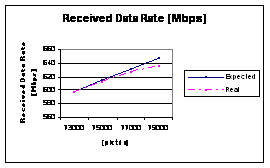 |
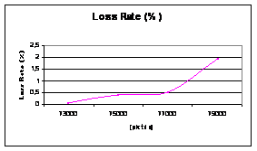 |
| Figure 1: Local received data rate over Linux platform (log at receiver side) |
Figure 2: Local loss rate (%) over Linux platform (log at receiver side) |
Local experimentation with logging only at receiver side
Over Linux platform and by using the log file at the receiver side D-ITG presents the performance depicted in Figure 1. In Figure 2 the percentage loss rate (between real and expected data rate) as a function of the packet rate is reported. In the case of C=75000pkt/s, c=1024byte, t=60s D-ITG reaches a received data rate equal to 611Mbit/s with a percentage loss rate equal to 0.4%.
By using the same parameters, in Figure 3 a comparative analysis between traffic generators that can log at receiver side is reported. As far as experimental results, D-ITG shows the best performance. It is important to underline that Iperf (which presents a percentage loss rate equal to 5,3% with respect to 0,4 % of D-ITG) works in a different way with respect to D-ITG. Indeed Iperf does not produce a log file: it provides only an estimation of received and transmitted date rate at the end of the experiment. By using Iperf it is not possible to make a complete performance study, it is only possible to determine average values on the whole duration of the experiment.
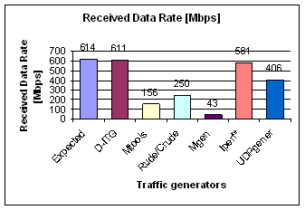 |
| Figure 3: Comparative analysis of local received data rate over Linux platform (log at receiver side) |
Local experimentation with logging both at receiver and sender side
Over a single Linux host and by using log file both at receiver and sender side D-ITG presents the performance depicted in Figure 4 and Figure 5. In particular in Figure 4 (Figure 5) a comparative analysis with respect to generated (received) data rate between traffic generators that can log both at receiver and sender side is reported. In the case of C=63000pkt/s, c=1024byte, t=60s D-ITG reaches a received data rate equal to 511Mbps. By observing Figure 3 and Figure 4. it is possible to understand that: (i) by logging both at sender and receiver side D-ITG presents a reduction of 100 Mbps; (ii) both D-ITG and Iperf can receive all sent packets. Other analyzed generators present a high rate of loss packets. Iperf presents a percentage reduction higher than D-ITG when the log process, at both side of the communication, is performed. Finally, in this case Mtools presents a generated data rate higher than that one observed in Figure 3: this is due to the different packet rate (C).
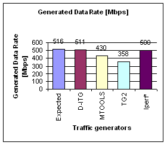 |
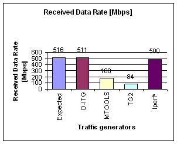 |
|
Figure 4: A comparative analysis with respect to generated data rate over Linux platform (local and log at sender and receiver side) |
Figure 5: A comparative analysis with respect to received data rate over Linux platform (local and log at sender and receiver side) |
Linux Platform: distributed experimentation
In this subsection we describe the results of the distributed experimentation over Linux platform. In this case we used the same operational mode of the section "Linux Platform: local experimentation".
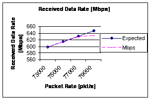 |
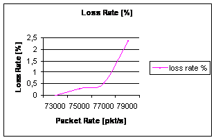 |
|
Figure 6: Distributed received data rate over Linux platform (log at receiver side) |
Figure 7: Distributed loss rate (%) over Linux platform (log at receiver side) |
Distributed experimentation with logging only at receiver side
Between two Linux devices and by using the log file at the receiver side D-ITG present the performance depicted in Figure 6. In Figure 7 a percentage loss rate (between real and expected data rate) as a function of packet rate is reported. In the case of C=77000pkt/s, c=1024byte, t=60s D-ITG reaches a received data rate equal to 627 Mbit/s with a percentage loss rate equal to 0.5%. In Figure 7 the percentage loss rate trend is depicted. It is important to note that also over two distinct devices D-ITG is able to reach high performance. Figure 8 shows a comparative analysis between traffic generators over two distinct devices.
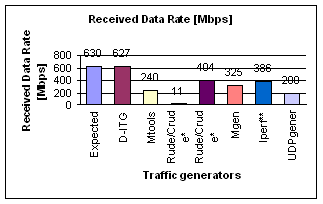 |
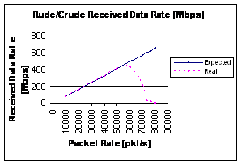 |
|
Figure 8: Distributed received data rate over Linux platform (log at receiver side) |
Figure 9: Distributed loss rate (%) over Linux platform (log at receiver side) |
Also in this case, D-ITG presents the best performance. It is important to underline that Rude/Crude for 77000 pkt/s presents a very low performance (11 Mbps). Indeed we studied the Rude/Crude performance by varying the packet rate: the results are depicted in Figure 9. Rude/Crude presents the maximum data rate for a packet rate equal to 60000 pkt/s (438 Mbps with an error, between the expected and real value, equal to 0.9%). Thanks to this analysis, we can conclude that: (i) Rude/Crude is able to reach data rate up to 438 Mbps whereas D-ITG reaches 627 Mbps; (ii) Rude/Crude cannot generate traffic with a high packet rate. Regarding Iperf, we must take into account the observation made at the end of the section "Local experimentation with logging only at receiver side".
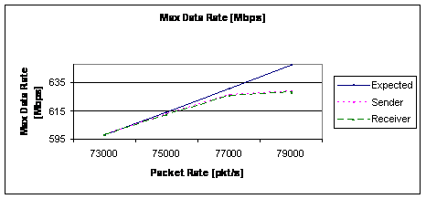 |
| Figure 10: Generated and received data rate over Linux devices (distributed and log both at sender and receiver side) |
Distributed experimentation with logging both at receiver and sender side
Over two distinct Linux devices and by using log file both at receiver and sender side D-ITG presents the performance depicted in Figure 10. In this figure the data rate (both at sender and receiver side) trend is reported. In the case of C=75000pkt/s, c=1024byte, t=60s D-ITG reaches a generated data rate equal to 612Mbps (with an error equal to 0.5%). The logging process at sender side implies a maximum data rate reduction in the generation phase. Moreover, all generated packets have been received at receiver side. In Figure 11 a comparative analysis among traffic generators over two distinct Linux devices with respect to generated data rate is shown. In the same way in Figure 12 a comparative analysis with respect to received data rate is sketched. Results shown in Figure 11 and in Figure 12 present some interesting properties: (i) D-ITG presents (both at sender and receiver side) high performance; (ii) TG2 presents very high performance. This result is not valid for the local experimentation. Indeed, in that case TG2 reaches respectively 358Mbps at sender side and 84Mbps at receiver side. Instead, D-ITG presents substantially the same performance both in the local and in the distributed experimentation.
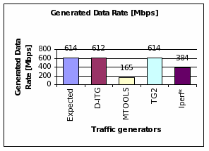 |
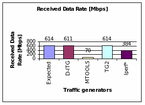 |
|
Figure 11: G comparative analysis with respect to generated data rate over Linux platform (distributed and log at sender and receiver side) |
Figure 12: A comparative analysis with respect to received data rate over Linux platform (distributed and log at sender and receiver side) |